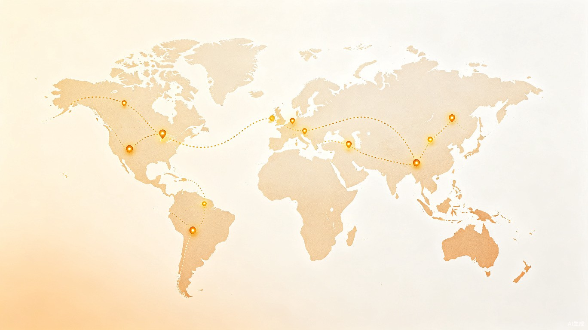

用地图，播放你的人生旅途

记录每一次出发，串联每一段回忆，让旅途有迹可循
在世界地图上点亮你走过的城市，用彩色线条连接每一段旅程，直观展现你的人生足迹。
按时间顺序重温你的旅行故事，像播放电影一样，让回忆在地图上缓缓流动。
简单几步记录你的旅行，支持多种交通方式，自动计算旅程时长与距离。
简单易用，让记录成为一种享受
添加你的旅行目的地、日期和交通方式，记录沿途的美好瞬间。
系统自动在地图上绘制你的旅行路线，每一座城市都被点亮。
点击播放，让你的人生故事在地图上缓缓展开，重温每一次感动。
旅行的意义，不在于走了多远，
而在于那些路上的故事，最终成为了我们的一部分。